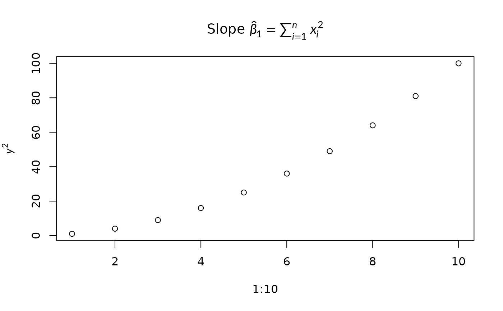

Sets defaults for latex_grob(), grid.latex(), latex_dims(),
latex_tree() and the markdown functions. An argument given in a call
always wins over the default.
Usage
latex_options(
math_font = NULL,
render_mode = NULL,
tex_style = NULL,
input_mode = NULL,
justify = NULL,
line_break = NULL,
markdown_style = NULL,
device_math = NULL
)
reset_latex_options()Arguments
- math_font
Math font; see
available_math_fonts().- render_mode
"typeface"or"path"; seelatex_grob().- tex_style
"","display","text","script"or"scriptscript"; seelatex_grob().- input_mode
"mixed","math"or"document"; seelatex_grob().- justify
If
TRUE, stretch wrapped lines to fillmax_width.- line_break
"greedy"or"optimal"; seelatex_grob().- markdown_style
Default style for
markdown_grob()andmarkdown_box_grob(): amarkdown_style(), CSS text, or a path to a.cssfile.- device_math
If
TRUE, any plot label containing math, such as"Slope $x^2$", is typeset as LaTeX. This works for base graphics (main,xlab,text(),legend(), ...), and also for lattice, grid and ggplot2. Labels without math, such as"Cost $5-$10", are left alone.Heights are not adjusted: a tall formula can overflow a margin or a
legend()box. Measure it withlatex_dims()and make room withpar(mar = ). Seevignette("base-graphics")for the rules and limitations.
Details
With no arguments, returns the current settings (NULL means the
built-in default). Setting an option to NULL resets it. The previous
settings are returned, so do.call(latex_options, old) restores them.
Size and line spacing are set with gp (fontsize, cex,
lineheight), not here.
Examples
# \donttest{
old <- latex_options(math_font = "stix", render_mode = "typeface")
grid.latex("$\\sum_{i=1}^{n} i^{2}$", gp = grid::gpar(fontsize = 14))
do.call(latex_options, old)
# Math in base graphics, with no other change to the plotting code.
latex_options(device_math = TRUE)
plot(1:10, (1:10)^2,
main = "Slope $\\hat{\\beta}_1 = \\sum_{i=1}^{n} x_i^2$",
ylab = "$y^2$")

# }